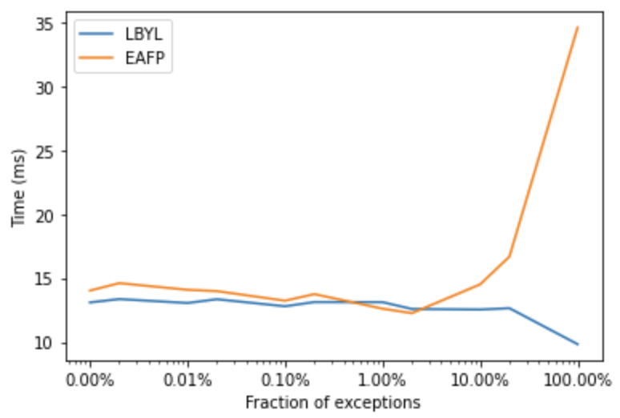

Timothy Wolodzko
About
Lessons learned from implementing minimal Scheme four times
We were in the middle of a global pandemic. Tormented by fear, locked in our homes, everyone was coping in their own way. Some people started baking bread, writing poetry…
Nov 29, 2022
Pipelines: The #1 data processing design pattern
In mathematics, two functions
\(f\)
and
\[g\]
can be composed
\(f \circ g\)
, what is defined as
Jun 8, 2022
My favorite developer tools for Python
There are many dependency management tools for python: conda, poetry, pipenv, tox, etc. Each of them has its pros and cons, fans and opponents. After spending an awful lot of time researching them, resolving…
Mar 25, 2022

When it is easier to ask for forgiveness than permission?
There are two programming styles: look before you leap (LBYL) and easier to ask for forgiveness than permission (EAFP). There are pros and cons of both styles, EAFP in some cases may be more readable and…
Jan 14, 2022
Makefile Programming Language Tutorial
Makefile language is a functional, dynamically typed language, and of course, it is Turing complete. It’s probably the most popular, unpopular programming language, widely adopted in many programming projects (especially ones using C as the main language). While it shares…
Jan 6, 2022
Data Scientists Write Bad Code or Maybe That’s Not the Problem?
Technologies and methodologies…
Nov 24, 2021
Environment variables
Using environment variables for storing configuration is a de facto standard. It was one of the recommendations from Heroku’s Twelve-Factor App guide and has become widely adopted since then. We are all familiar with environment variables, but there are many, less…
Sep 28, 2021
Can Machine Learning be Lean?
Lean was a way of improving manufacturing efficiency in Toyota. Lean software development and lean startup methodologies followed it. One of the key take-aways of lean is cutting off the unnecessary processes while leaving the ones that bring actual value. Could the ideas be…
Jun 12, 2021
Bash pocket guide
Bash is like regular expressions: everyone uses it, nobody…
Feb 26, 2021
Deploying Machine Learning Models: A Checklist
In The Checklist Manifesto, Atul Gawande shows how using checklists can make everyone’s work more efficient and less error-prone. If they are useful for aircraft pilots and surgeons, we could use…
Jan 12, 2021
Makefiles for not-only programmers
Make is commonly used in software development for managing the compilation of the source code. Use cases of make however go far beyond…
Nov 2, 2020
No matching items
MLOps at GreenSteam: Shipping Machine Learning [Case Study]
Mar 31, 2021
https://neptune.ai/blog/mlops-at-greensteam-shipping-machine-learning-case-study
Timothy Wolodzko - Staff Machine Learning Engineer @ Equinix
Dec 6, 2021
https://applyingml.com/mentors/timothy-wolodzko/
No matching items